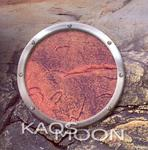

Home Artist links Label link

Kaos Moon - The Circle Of Madness
| Artist: | Kaos Moon |
| Title: | The Circle Of Madness |
| Label: | Unicorn Records UNCR-5014 |
| Length(s): | 41 minutes |
| Year(s) of release: | 2004 |
| Month of review: | [04/2005] |
Line up
Norman Lachapelle - bass
Sylvain Provost - guitars
Magelle Cormier - drums
Bernard Ouellette - vocals, drums assorted keys
with:
Benoit Chaput, Alain Bertrand, Christian Gendron, Jean-Francois Belanger, Patrick Graham, Frederic Joyal, Pascal Tremblay, Robin Boulianne, Alain Pothier, Guy Dubuc
Tracks
| 1) | Eternal Light Avenue | 5.04
|
| 2) | Say To Me | 7.05
|
| 3) | Crawl | 3.42
|
| 4) | The Waves | 5.18
|
| 5) | The Wall Of Silence | 6.50
|
| 6) | SOAB | 4.27
|
| 7) | Presidency | 5.10
|
| 8) | Circle Of Madness | 3.17
|
Summary
The music
This album displays a quite accessible and melodic form of prog, which is comparable to German bands like Sylvan or RPWL, including the accented English. Now, I'm not saying they sound like those bands per se, just scoping their ball park. Furthermore in the longer Say To Me we also hear some sort of play acting stuff, that has slight semblances to the more expressive parts of the Twelfth Night epics (without going as all out as that).
As may be expected, a number of the tracks on the album lean very much towards pop, the short Crawl being a prime example of that. The Waves with its close harmony vocals reminds me a little of Crosby, Stills, Nash & Young, whilst the use of violin seems to refer to back a while too.
Tracks like SOAB and Presidency are less fluent melodically, resulting in a somewhat bare sound that doesn't please as much as the earlier tracks did. The closing title track picks up the melody again, though, leaving us on a high note.
A lot of CDs are longer than work for them. That is one bit of criticism you can not bring against this album. If you combine this with the fact that the album does contain some weaker tracks towards the end we get only about half an hour of good music. This is a tad on the poor side.
Conclusion
This is not what you would call a particularly profound album, and I guess many would dispose of it with a simple "I don't like neo prog". Having said that: the melodies on this album are friendly, gentle. With that, they tend to lack in bite. The renditions fit the compositions quite well, and both instruments and vocals are pretty decent. This results in an album that does quite well in what I presume it was aimed to do. Those into the more accessible melodic sound could therefore enjoy this one, although there might just be a little too less profile in the songs.
I do feel the band should have offered a little more material on what is a full length release.
© Roberto Lambooy